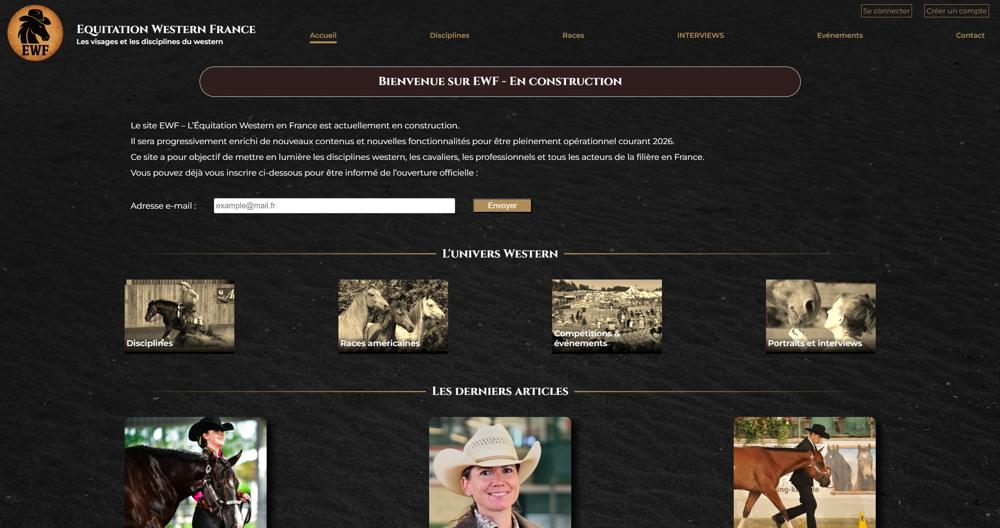
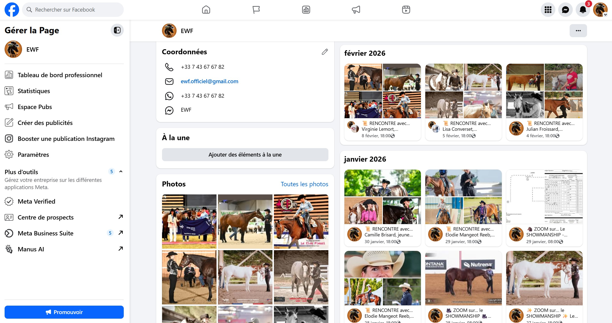
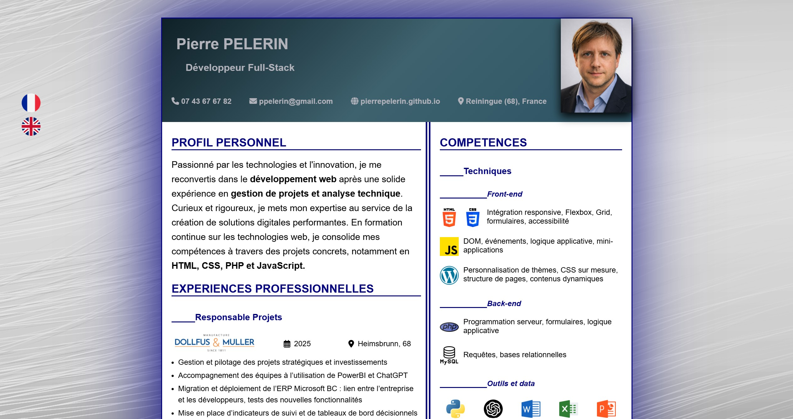
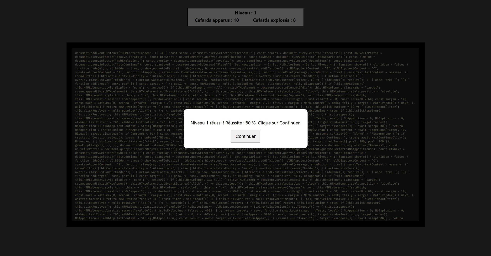

Conception et développement du site web EWF – Équitation Western France (full stack) - En construction
#Full Stack#Responsive#UX / UI Design#Architecture Web#SEO
- Développement full stack – HTML / CSS / PHP / MySQL
- Implémentation d’un moteur d’articles dynamique et d'une carte interactive
- Développement d’un design personnalisé (branding cohérent et identité visuelle forte)
- Approche orientée utilisateur (lecture fluide, navigation intuitive)

Gestion de la page Facebook EWF – Équitation Western France
#Communication#Engagement#Coordination#Croissance#Community
- Animation d’une communauté autour de la filière équitation western (+ 2000 abonnés, + 10 000 vues par jour)
- Création de contenus éditoriaux (interviews, actualités, mises en avant de professionnels)
- Planification des publications et optimisation de l’engagement

Réalisation d'un CV 100% HTML/CSS avec gestion multilingue via ancres
#HTML5#CSS3#Responsive#Ancres#i18n
- Conception et développement d’un CV uniquement HTML5 et CSS3
- Optimisation UX/UI (responsive design, accessibilité)
- Version multilingues (i18n, gestion d’affichage conditionnel)

Développement d’un jeu interactif en JavaScript orienté objet (POO)
#Javascript#POO#DOM#GameLoop#UI
- Développement d’un jeu de tir en JavaScript orienté objet (classes, états, encapsulation)
- Mise en place d’une boucle de jeu, gestion des événements et des niveaux
- Optimisation et lisibilité du code : séparation logique (moteur, UI, entités), variables configurables
